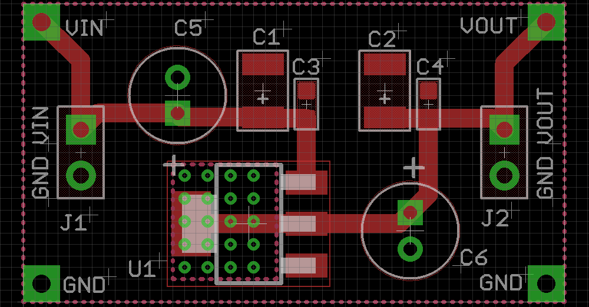

This page is aim to share the Commonly-used Circuits. Hope it will be useful for you guys. If you have any suggestions or want to have more circuits, Please feel free to send your wishes to <mailto:shuyang@seeedstudio.com>
Vin=4.75v-10v Vout=3.3v I=1A
Download
the BOM here
the eagle schematic & layout here

BOM
| Seeed PN | Image | MPN | Category | Package | Designator | Qty | Description | Manufacturer | Datasheet |
|---|---|---|---|---|---|---|---|---|---|
| 1310190P1 | 
|
CJT1117-3.3 | IC | SOT-223 | U1 | 1 | SMD PMIC LDO Vin4.75v Vout 3.3v I=1A | CJ | 1310190P1 |
| 0130120P1 | 
|
TAJB106K016RNJ | Capacitor | AVX-B | C1,C2 | 2 | SMD CAP Tantalum 10uF-16V 10% | AVX | 0130120P1 |
| 0100020P1 | CC0603KRX7R9BB104 | Capacitor | 0603 | C3,C4 | 2 | SMD CAP Ceramic 100nF-50V-10%-X7R | YAGEO | 0100020P1 | |
| 302030060 | KS100uF/16V 5X7 | Capacitor | Radial-2.0-D5.0*H7mm | C5,C6 | 2 | DIP CAP Aluminum 100uF-16V;Radial-2.0-D5.0*H7mm | Jiaweicheng | 302030060 |
Vin=6.5v-12v Vout=5v I=1A
Download
the BOM here
the eagle schematic & layout here
BOM
| Seeed PN | Image | MPN | Category | Package | Designator | Qty | Description | Manufacturer | Datasheet |
|---|---|---|---|---|---|---|---|---|---|
| 1310170P1 | CJT1117-5.0 | IC | SOT-223 | U1 | 1 | SMD PMIC LDO Vin6.5v Vout 5v I=1A | CJ | 1310170P1 | |
| 0130120P1 |
|
TAJB106K016RNJ | Capacitor | AVX-B | C1,C2 | 2 | SMD CAP Tantalum 10uF-16V 10% | AVX | 0130120P1 |
| 0100020P1 | CC0603KRX7R9BB104 | Capacitor | 0603 | C3,C4 | 2 | SMD CAP Ceramic 100nF-50V-10%-X7R | YAGEO | 0100020P1 | |
| 302030060 | KS100uF/16V 5X7 | Capacitor | Radial-2.0-D5.0*H7mm | C5,C6 | 2 | DIP CAP Aluminum 100uF-16V;Radial-2.0-D5.0*H7mm | Jiaweicheng | 302030060 |